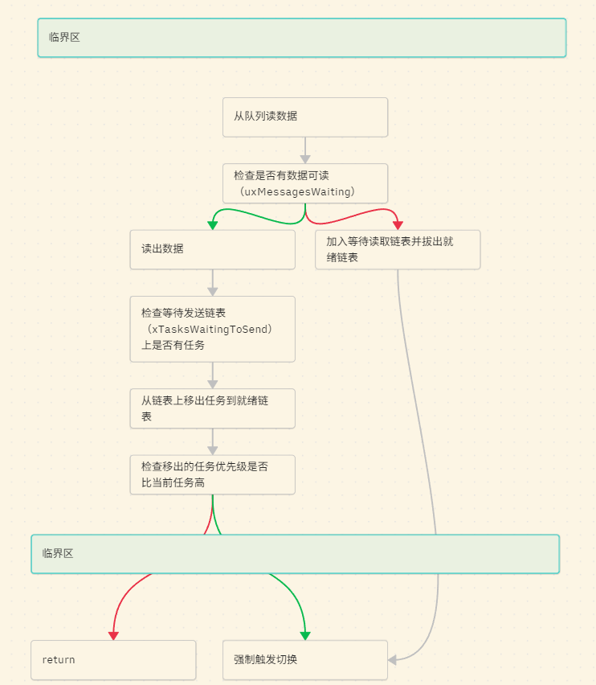

版权信息
warning
本文章为博主原创文章。遵循 CC 4.0 BY-SA 版权协议，转载请附上原文出处链接和本声明。
本节我们正式开始讲解进程间通信的内容。首先要讲的就是队列了，为什么要先讲队列呢？因为信号量和互斥量都会复用队列的代码，所以先讲队列又利于我们后面的学习。
要想理解队列，只需理解三部分内容——环形缓冲区（存储数据）和链表（任务管理）
1. 队列详解
1.1 队列结构体
在 queue.c 中，我们可以找到队列的核心控制块 Queue_t（为了清晰，我精简了结构）：
typedef struct QueueDefinition
{
int8_t *pcHead; /* 指向队列存储区的起始位置 */
int8_t *pcWriteTo; /* 下一个要写入的位置 */
union {
QueuePointers_t xQueue; /* 包含 pcReadFrom 指针，指示下一个要读取的位置 */
// ... (省略了互斥量特有的变量)
} u;
/* 核心：两个链表 */
List_t xTasksWaitingToSend; /* 等待发送链表：当队列满了，想塞数据的任务在这排队 */
List_t xTasksWaitingToReceive; /* 等待接收链表：当队列空了，想拿数据的任务在这排队 */
volatile UBaseType_t uxMessagesWaiting; /* 队列里现在有几个数据 */
UBaseType_t uxLength; /* 队列总共能装几个数据 */
UBaseType_t uxItemSize; /* 每个数据有多大 (比如 sizeof(int)) */
} xQUEUE;
typedef xQUEUE Queue_t;1.2 环形缓冲区
队列使用的数据存取结构是环形缓冲区（Circular Buffer，也叫 Ring Buffer）。经典的数据结构，完美解决了两个问题：内存固定（不产生碎片） 和 极速读写（时间复杂度永远是 O(1)）。
一个标准的环形缓冲区只需要四个核心元素：
-
一块连续的内存（比如一个数组
buffer[SIZE]）。 -
读指针（Head / ReadIndex）：指向下一个要被读取的数据位置。
-
写指针（Tail / WriteIndex）：指向下一个新数据要写入的位置。
-
求余运算（Modulo
%）：这是让数组首尾相连变成“环”的关键。当指针走到数组末尾时，index = (index + 1) % SIZE就能让指针又回到 0。
至于环形缓冲区的读写方法，请自行查阅相关资料。
-
和普通数组有何区别？
假设我们有一个长度为 5 的普通数组用来做缓冲区。
-
我们按顺序写入了 3 个数据：
[A, B, C, 空, 空]。 -
现在我们读取了 1 个数据（读走 A）。数组变成了
[空, B, C, 空, 空]。 -
如果继续接着写，写到末尾时
[空, B, C, D, E]，数组尾部就没空间了。 -
笨办法：把 B,C,D,E 全部往前挪一格（极度消耗 CPU 时间，也就是内存拷贝）。
-
聪明办法（环形缓冲区）：尾部写满了？直接把“写指针”绕回数组的第 0 个位置！
-
-
如何判断“空”和“满”？
如果读指针和写指针重合了（
Head == Tail），这到底代表数组是被彻底写满了，还是被彻底读空了？这是一个著名的二义性问题。有两种主流的解决办法：
-
办法 1（牺牲一个存储单元）：规定队列里永远留一个空位。如果
(Tail + 1) % SIZE == Head，就认为满了。Linux 内核很多地方用这个。 -
办法 2（引入计数器）：加一个变量
count。写数据count++，读数据count--。如果count == SIZE就是满，count == 0就是空。FreeRTOS 的队列就是用这种方式（上一节的uxMessagesWaiting吗？）。
-
1.3 队列的发送和接收（链表操作）
1.3.1 读取/接收
大致的流程是这样的，一图胜千言：其中
绿色箭头代表判断为True
红色则为False

1.3.2 发送
发送也是一样的道理，完全可以类推。
1.4 值传递
FreeRTOS 的队列是 “值传递（Copy by Value）”。使用的是 memcpy 函数
-
优点：极其安全。Task B 把局部变量塞进队列后，就算 Task B 的局部变量被销毁了，队列里的数据依然是完整的。
-
缺点：如果传很大的结构体，拷贝极其耗时。
-
FreeRTOS 的解决办法：如果你要传大块数据，你可以把指向大块数据的“指针”作为一个变量（4字节）塞进队列，这样既享受了队列的同步机制，又避免了大量内存拷贝。（但此时你需要自己管理那块大内存的生命周期）。
2. 信号量
有了队列，我们看信号量就很简单了，因为他们的核心逻辑都是等待/唤醒机制。
我们可以把信号量看作是一个大小为 0 字节的“消息”。以二值信号量为例：
现在我们定义一个特殊的队列。长度为1，消息大小为0。给该队列分配一个0字节大小的环形缓冲区（地址为NULL）。
任务A（消费者）调用 QueueReceive 读队列数据。
- 队列为空（因为消息数为0）
- 任务A被阻塞
然后，一个任务B（生产者）在执行完自己的逻辑后调用 QueueSend 向队列写数据。
- memcpy拷贝0字节数据到NULL。
- 队列消息+1（队列满了）
- 任务A被唤醒
任务A开始运行。直到再次因 QueueReceive 被阻塞。
我们把 QueueSend 换成 SemaphoreGive，QueueReceive 换成 SemaphoreTake。
任务 A 在等数据（信号量），任务 B 发送数据。这和队列“生产者-消费者”的模型在数学逻辑上是等价的。
这就是二值信号量的逻辑。我们充分利用了队列结构体中的 “uxMessagesWaiting”
成员制作二值信号量。
计数信号量呢？就是一个长度为 N 的队列。
3. 互斥量
互斥量和二值信号量，长得很像，但是完全复用队列的逻辑是不能实现互斥量的机制的。
因为它引入了 “所有权”（Ownership） 的概念，解决“优先级翻转”的问题。这个是队列逻辑无法覆盖的，主要体现在以下三点：
-
优先级继承机制 (Priority Inheritance)
这是互斥量最核心的特性，也是它与信号量/队列最大的区别。
-
逻辑： 当高优先级任务 A 等待低优先级任务 B 持有的互斥量时，内核会动态地将任务 B 的优先级提升到与 A 相同。
-
队列无法实现： 普通队列或信号量不关心“谁持有它”。队列只知道“现在有没有东西可取”，它没有记录“是谁取走了东西”，因此无法回溯并提升那个任务的优先级。
-
-
递归锁定 (Recursive Locking)
-
互斥量： 支持“嵌套”获取。同一个任务可以多次
Take同一个互斥量而不会把自己死锁，只要对应的Give次数相同即可。 -
队列： 如果你对一个长度为 1 的队列连续执行两次
Take，第二次一定会因为队列为空而导致任务自我死锁。
-
-
解锁权限 (Strict Unlocking)
-
信号量/队列： 任务 A 可以
Take，然后任务 B 来Give（常用于任务间同步）。 -
互斥量： 必须由加锁的任务来解锁。如果任务 A 拿到了互斥量，任务 B 尝试去释放它，RTOS 内核通常会报错或操作无效。这种“所有权”约束是队列逻辑不具备的。
-
以前我也不理解二值信号量和互斥信号量有什么区别，现在有了更深的理解，下面是一个对比表：
| 特性 | 信号量 (Semaphore) / 队列 | 互斥量 (Mutex) |
|---|---|---|
| 底层模型 | 资源计数器 / 生产者-消费者 | 资源锁 / 所有权模型 |
| 主要用途 | 任务间同步（我发你收） | 临界资源保护（我用你等） |
| 所有权 | 无（谁都能发，谁都能收） | 有（谁加锁谁解锁） |
| 优先级继承 | 无（会导致优先级翻转） | 有（解决优先级翻转） |
| 实现复杂度 | 较低（基础阻塞机制） | 较高（需记录持有者、处理优先级动态调整） |
至于互斥量的实现，且听下回分解。